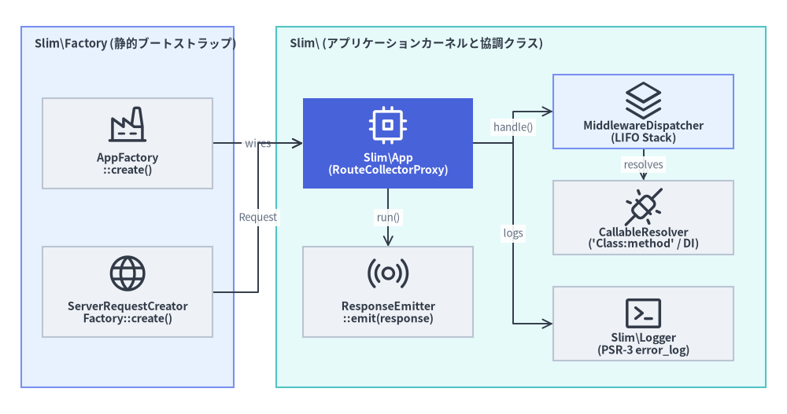
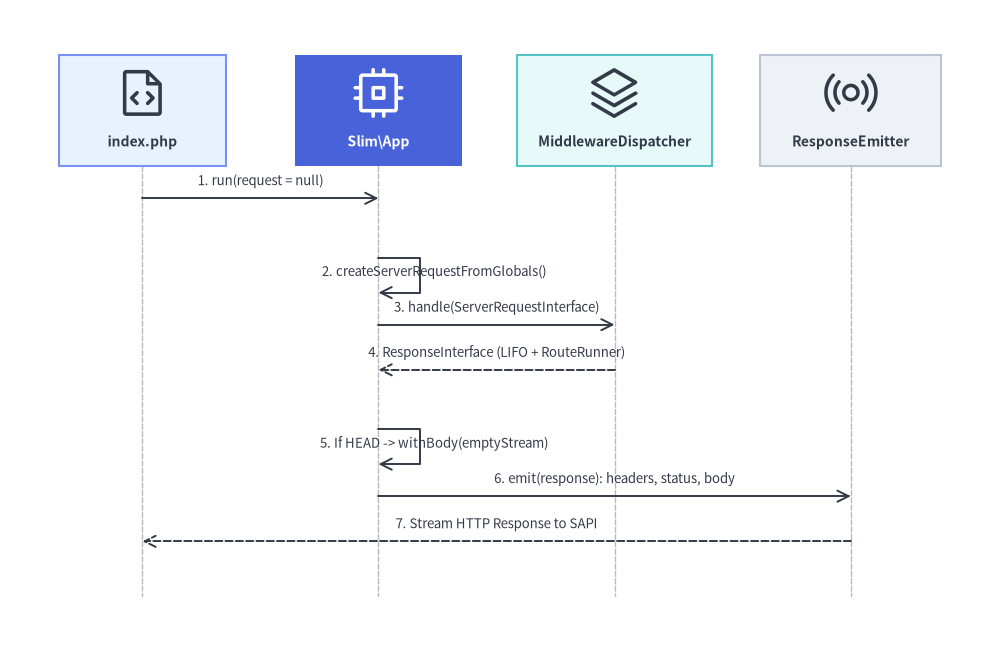

コアアプリケーション & ブートストラップファクトリ
Slim\ および Slim\Factory\ 名前空間に属する 7 つのコアランタイム・ブートストラップクラス（Slim\App、Slim\Factory\AppFactory、Slim\Factory\ServerRequestCreatorFactory、Slim\CallableResolver、Slim\MiddlewareDispatcher、Slim\ResponseEmitter、Slim\Logger）の完全 API リファレンスです。

Source Code
from drawlib.canvas import save, setup
from drawlib.diagrams.architecture import ArchitectureDiagram, Node, NodeGroup, PhosphorIcon
from drawlib.styles import Styles
setup(width=148, height=78)
d = ArchitectureDiagram(
node_style=Styles.Dark,
node_text_style=Styles.DarkBold.patch(text_size=10.2),
edge_style=Styles.Dark.patch(line_width=1.4),
edge_text_style=Styles.Muted.patch(text_size=9.5),
node_card_style=Styles.Neutral,
)
fac_grp = d.add(
NodeGroup(
"Slim\\Factory (静的ブートストラップ)",
width=40,
height=68,
style=Styles.PrimaryNeutral,
text_style=Styles.DarkBold.patch(text_size=10.5, halign="left", valign="top"),
),
xy=(4, 5),
)
app_fac = fac_grp.add(
Node(
"AppFactory\n::create()",
icon=PhosphorIcon.FACTORY,
width=32,
height=17,
card_style=Styles.Neutral,
),
xy=(20, 46),
)
req_fac = fac_grp.add(
Node(
"ServerRequestCreator\nFactory::create()",
icon=PhosphorIcon.GLOBE,
width=32,
height=17,
card_style=Styles.Neutral,
),
xy=(20, 18),
)
core_grp = d.add(
NodeGroup(
"Slim\\ (アプリケーションカーネルと協調クラス)",
width=92,
height=68,
style=Styles.SecondaryNeutral,
text_style=Styles.DarkBold.patch(text_size=10.5, halign="left", valign="top"),
),
xy=(52, 5),
)
app_node = core_grp.add(
Node(
"Slim\\App\n(RouteCollectorProxy)",
icon=PhosphorIcon.CPU,
width=32,
height=17,
style=Styles.White,
text_style=Styles.WhiteBold.patch(text_size=10.2),
card_style=Styles.PrimaryFlat,
),
xy=(21, 46),
)
emitter_node = core_grp.add(
Node(
"ResponseEmitter\n::emit(response)",
icon=PhosphorIcon.BROADCAST,
width=32,
height=17,
card_style=Styles.Neutral,
),
xy=(21, 18),
)
mw_disp = core_grp.add(
Node(
"MiddlewareDispatcher\n(LIFO Stack)",
icon=PhosphorIcon.STACK,
width=34,
height=14,
card_style=Styles.PrimaryNeutral,
),
xy=(69, 52),
)
resolver = core_grp.add(
Node(
"CallableResolver\n('Class:method' / DI)",
icon=PhosphorIcon.PLUGS_CONNECTED,
width=34,
height=14,
card_style=Styles.Neutral,
),
xy=(69, 32),
)
logger = core_grp.add(
Node(
"Slim\\Logger\n(PSR-3 error_log)",
icon=PhosphorIcon.TERMINAL_WINDOW,
width=34,
height=14,
card_style=Styles.Neutral,
),
xy=(69, 12),
)
app_fac.connect(app_node, label="wires")
req_fac.connect(app_node, label="Request")
app_node.connect(mw_disp, label="handle()")
app_node.connect(emitter_node, label="run()")
mw_disp.connect(resolver, label="resolves")
app_node.connect(logger, label="logs")
d.draw(xy=(0, 0))
save()
classSlim\App#
- ソースファイル:
Slim/App.php - 名前空間:
Slim - 継承クラス:
Slim\Routing\RouteCollectorProxy（RouteCollectorProxyInterfaceを実装） - 実装インターフェース:
Psr\Http\Server\RequestHandlerInterface - ジェネリクス注釈:
@template TContainerInterface of (ContainerInterface|null)
Slim\App は Slim 4 アプリケーションの中核カーネルです。RouteCollectorProxy を継承しているため、$app インスタンス上で直接ルーティング定義メソッド（get(), post(), put(), delete(), options(), patch(), any(), map(), group(), redirect()）を呼び出せるほか、PSR-15 の RequestHandlerInterface を実装しているため、外部の PSR-15 ランナーへの組み込みやテストコードからの $app->handle($request) 直接実行が可能です。
PHP クラスシグネチャ (Slim\App)#
namespace Slim;
use Psr\Container\ContainerInterface;
use Psr\Http\Message\ResponseFactoryInterface;
use Psr\Http\Message\ResponseInterface;
use Psr\Http\Message\ServerRequestInterface;
use Psr\Http\Server\MiddlewareInterface;
use Psr\Http\Server\RequestHandlerInterface;
use Psr\Log\LoggerInterface;
use Slim\Interfaces\CallableResolverInterface;
use Slim\Interfaces\MiddlewareDispatcherInterface;
use Slim\Interfaces\RouteCollectorInterface;
use Slim\Interfaces\RouteResolverInterface;
use Slim\Middleware\BodyParsingMiddleware;
use Slim\Middleware\ErrorMiddleware;
use Slim\Middleware\RoutingMiddleware;
use Slim\Routing\RouteCollectorProxy;
class App extends RouteCollectorProxy implements RequestHandlerInterface
{
public const VERSION = '4.15.1';
protected RouteResolverInterface $routeResolver;
protected MiddlewareDispatcherInterface $middlewareDispatcher;
public function __construct(
ResponseFactoryInterface $responseFactory,
?ContainerInterface $container = null,
?CallableResolverInterface $callableResolver = null,
?RouteCollectorInterface $routeCollector = null,
?RouteResolverInterface $routeResolver = null,
?MiddlewareDispatcherInterface $middlewareDispatcher = null
);
public function getRouteResolver(): RouteResolverInterface;
public function getMiddlewareDispatcher(): MiddlewareDispatcherInterface;
public function add($middleware): self;
public function addMiddleware(MiddlewareInterface $middleware): self;
public function addRoutingMiddleware(): RoutingMiddleware;
public function addErrorMiddleware(
bool $displayErrorDetails,
bool $logErrors,
bool $logErrorDetails,
?LoggerInterface $logger = null
): ErrorMiddleware;
public function addBodyParsingMiddleware(array $bodyParsers = []): BodyParsingMiddleware;
public function run(?ServerRequestInterface $request = null): void;
public function handle(ServerRequestInterface $request): ResponseInterface;
}
定数・プロパティ (Slim\App)#
| メンバ | 可視性・型 | 既定値 / 初期値 | 説明 |
|---|---|---|---|
VERSION |
public const string |
'4.15.1' |
Slim\App クラスに定義されたバージョン定数。 |
$routeResolver |
protected RouteResolverInterface |
new RouteResolver($this->routeCollector) |
URI・HTTP メソッドに対するルート解決を実行するリゾルバ。 |
$middlewareDispatcher |
protected MiddlewareDispatcherInterface |
new MiddlewareDispatcher($routeRunner, ...) |
内部の RouteRunner を中心カーネルとしてシードされた LIFO ミドルウェアディスパッチャ。 |
$responseFactory |
protected ResponseFactoryInterface |
(RouteCollectorProxy から継承) |
新規レスポンスおよび HEAD リクエスト時の空ボディ生成に使用される PSR-17 ファクトリ。 |
$callableResolver |
protected CallableResolverInterface |
(RouteCollectorProxy から継承) |
ルートおよびミドルウェアの Callable を解決するリゾルバ。 |
$container |
protected ?ContainerInterface |
(RouteCollectorProxy から継承) |
任意の PSR-11 DI コンテナ。 |
$routeCollector |
protected RouteCollectorInterface |
(RouteCollectorProxy から継承) |
ルート定義を保持するコレクタ（既定は Slim\Routing\RouteCollector）。 |
コンストラクタ・メソッド一覧 (Slim\App)#
| メソッド | 引数 | 戻り値型 | 動作・備考 |
|---|---|---|---|
__construct(...) |
ResponseFactoryInterface $responseFactory, ?ContainerInterface $container = null, ?CallableResolverInterface $callableResolver = null, ?RouteCollectorInterface $routeCollector = null, ?RouteResolverInterface $routeResolver = null, ?MiddlewareDispatcherInterface $middlewareDispatcher = null |
void |
親クラス RouteCollectorProxy を初期化し、未指定時は既定の CallableResolver, RouteResolver, RouteRunner を生成して $middlewareDispatcher の最深部カーネルに設定します。 |
getRouteResolver() |
(なし) | RouteResolverInterface |
設定されている RouteResolverInterface インスタンスを返します。 |
getMiddlewareDispatcher() |
(なし) | MiddlewareDispatcherInterface |
アプリケーションの LIFO ミドルウェアディスパッチャを返します。 |
add($middleware) |
MiddlewareInterface|string|callable $middleware |
self (App<TContainerInterface>) |
PSR-15 ミドルウェアインスタンス、クラス名・コンテナキー文字列、または Callable を LIFO スタックの最外層へ追加します。 |
addMiddleware($middleware) |
MiddlewareInterface $middleware |
self (App<TContainerInterface>) |
型付きの Psr\Http\Server\MiddlewareInterface インスタンスをスタックへ追加します。 |
addRoutingMiddleware() |
(なし) | RoutingMiddleware |
RoutingMiddleware を生成・登録して返します。カスタムミドルウェア内で RouteContext を参照したい場合に、ミドルウェアの実行順序を明示制御する目的で使用します。 |
addErrorMiddleware(...) |
bool $displayErrorDetails, bool $logErrors, bool $logErrorDetails, ?LoggerInterface $logger = null |
ErrorMiddleware |
ErrorMiddleware を生成・登録して返します。LIFO 順で最外層として動作させるため、最後に登録するのが原則です。 |
addBodyParsingMiddleware(...) |
callable[] $bodyParsers = [] |
BodyParsingMiddleware |
JSON / フォーム / XML ボディを解析する BodyParsingMiddleware を生成・登録して返します。 |
run($request) |
?ServerRequestInterface $request = null |
void |
$request が null の場合は ServerRequestCreatorFactory::create()->createServerRequestFromGlobals() で自動生成し、$this->handle($request) の結果を new ResponseEmitter() でクライアントへ送出します。 |
handle($request) |
ServerRequestInterface $request |
ResponseInterface |
$this->middlewareDispatcher->handle($request) を実行します。RFC 2616 §9.4 準拠のため、リクエストメソッドが 'HEAD' の場合はレスポンスボディを空ストリームに差し替えて返します。 |
(親クラスから継承される get(), post(), put(), delete(), options(), patch(), any(), map(), group(), redirect(), getBasePath(), setBasePath(), getResponseFactory(), getCallableResolver(), getContainer(), getRouteCollector() の詳細は Slim\Routing\RouteCollectorProxy を参照してください。)

Source Code
from drawlib.canvas import save, setup
from drawlib.diagrams.sequence import Participant, PhosphorIcon, SequenceDiagram
from drawlib.styles import Styles
setup(width=144, height=96)
sd = SequenceDiagram(
node_style=Styles.Dark,
node_text_style=Styles.DarkBold.patch(text_size=10.0),
edge_style=Styles.Dark.patch(line_width=1.4),
edge_text_style=Styles.Dark.patch(text_size=9.5),
node_card_style=Styles.Neutral,
col_width=34.0,
step_y=6.5,
)
p_client = sd.add(Participant("index.php", icon=PhosphorIcon.FILE_CODE, width=24, card_style=Styles.PrimaryNeutral))
p_app = sd.add(
Participant(
"Slim\\App",
icon=PhosphorIcon.CPU,
width=24,
style=Styles.White,
text_style=Styles.WhiteBold.patch(text_size=10.0),
card_style=Styles.PrimaryFlat,
)
)
p_mw = sd.add(Participant("MiddlewareDispatcher", icon=PhosphorIcon.STACK, width=28, card_style=Styles.SecondaryNeutral))
p_emit = sd.add(Participant("ResponseEmitter", icon=PhosphorIcon.BROADCAST, width=26, card_style=Styles.Neutral))
p_client.request(p_app, "1. run(request = null)")
p_app.request(p_app, "2. createServerRequestFromGlobals()")
p_app.request(p_mw, "3. handle(ServerRequestInterface)")
p_mw.reply(p_app, "4. ResponseInterface (LIFO + RouteRunner)")
p_app.request(p_app, "5. If HEAD -> withBody(emptyStream)")
p_app.request(p_emit, "6. emit(response): headers, status, body")
p_emit.reply(p_client, "7. Stream HTTP Response to SAPI")
sd.draw(xy=(72, 48), align="center")
save()
使用例 (Slim\App)#
<?php
declare(strict_types=1);
use Psr\Http\Message\ResponseInterface as Response;
use Psr\Http\Message\ServerRequestInterface as Request;
use Slim\Factory\AppFactory;
$app = AppFactory::create();
// 1. JSON / form / XML リクエストボディの自動パースミドルウェア
$app->addBodyParsingMiddleware();
// 2. ルーティングミドルウェアの明示配置（RouteContext を参照するミドルウェアより内側に配置）
$app->addRoutingMiddleware();
// 3. エラーハンドリングミドルウェア（最後に追加＝LIFO で最も外側の層として実行）
$errorMiddleware = $app->addErrorMiddleware(true, true, true);
$app->get('/health', function (Request $request, Response $response): Response {
$payload = json_encode(['status' => 'ok', 'slim' => $this::VERSION], JSON_THROW_ON_ERROR);
$response->getBody()->write($payload);
return $response->withHeader('Content-Type', 'application/json');
});
$app->run();
classSlim\Factory\AppFactory#
- ソースファイル:
Slim/Factory/AppFactory.php - 名前空間:
Slim\Factory
AppFactory は、ResponseFactoryInterface を手動でインスタンス化することなく Slim\App を構築できる静的ビルダクラスです。AppFactory::create() または AppFactory::createFromContainer($container) を呼び出すと、静的プロパティ・PSR-11 コンテナ・Psr17FactoryProvider の優先順位リストから利用可能な PSR-17 実装を自動検出し、slim/http がインストールされている場合は Slim\Http\Factory\DecoratedResponseFactory で自動装飾します。
PHP クラスシグネチャ (Slim\Factory\AppFactory)#
namespace Slim\Factory;
use Psr\Container\ContainerInterface;
use Psr\Http\Message\ResponseFactoryInterface;
use Psr\Http\Message\StreamFactoryInterface;
use RuntimeException;
use Slim\App;
use Slim\Interfaces\CallableResolverInterface;
use Slim\Interfaces\MiddlewareDispatcherInterface;
use Slim\Interfaces\Psr17FactoryProviderInterface;
use Slim\Interfaces\RouteCollectorInterface;
use Slim\Interfaces\RouteResolverInterface;
class AppFactory
{
protected static ?Psr17FactoryProviderInterface $psr17FactoryProvider = null;
protected static ?ResponseFactoryInterface $responseFactory = null;
protected static ?StreamFactoryInterface $streamFactory = null;
protected static ?ContainerInterface $container = null;
protected static ?CallableResolverInterface $callableResolver = null;
protected static ?RouteCollectorInterface $routeCollector = null;
protected static ?RouteResolverInterface $routeResolver = null;
protected static ?MiddlewareDispatcherInterface $middlewareDispatcher = null;
protected static bool $slimHttpDecoratorsAutomaticDetectionEnabled = true;
public static function create(
?ResponseFactoryInterface $responseFactory = null,
?ContainerInterface $container = null,
?CallableResolverInterface $callableResolver = null,
?RouteCollectorInterface $routeCollector = null,
?RouteResolverInterface $routeResolver = null,
?MiddlewareDispatcherInterface $middlewareDispatcher = null
): App;
public static function createFromContainer(ContainerInterface $container): App;
public static function determineResponseFactory(): ResponseFactoryInterface;
protected static function attemptResponseFactoryDecoration(
ResponseFactoryInterface $responseFactory,
StreamFactoryInterface $streamFactory
): ResponseFactoryInterface;
public static function setPsr17FactoryProvider(Psr17FactoryProviderInterface $psr17FactoryProvider): void;
public static function setResponseFactory(ResponseFactoryInterface $responseFactory): void;
public static function setStreamFactory(StreamFactoryInterface $streamFactory): void;
public static function setContainer(ContainerInterface $container): void;
public static function setCallableResolver(CallableResolverInterface $callableResolver): void;
public static function setRouteCollector(RouteCollectorInterface $routeCollector): void;
public static function setRouteResolver(RouteResolverInterface $routeResolver): void;
public static function setMiddlewareDispatcher(MiddlewareDispatcherInterface $middlewareDispatcher): void;
public static function setSlimHttpDecoratorsAutomaticDetection(bool $enabled): void;
}
静的メソッド一覧 (Slim\Factory\AppFactory)#
| メソッド | 引数 | 戻り値型 | 説明 |
|---|---|---|---|
create(...) |
?ResponseFactoryInterface $responseFactory = null, ?ContainerInterface $container = null, ?CallableResolverInterface $callableResolver = null, ?RouteCollectorInterface $routeCollector = null, ?RouteResolverInterface $routeResolver = null, ?MiddlewareDispatcherInterface $middlewareDispatcher = null |
App |
明示引数と静的プロパティをマージし、self::determineResponseFactory() を解決して新規 App を生成します。 |
createFromContainer($container) |
ContainerInterface $container |
App |
$container->has(...) を確認して ResponseFactoryInterface, CallableResolverInterface, RouteCollectorInterface, RouteResolverInterface, MiddlewareDispatcherInterface をコンテナから取得（未登録時は自動検出または null）し、new App(...) を返します。 |
determineResponseFactory() |
(なし) | ResponseFactoryInterface |
static::$responseFactory または Psr17FactoryProvider::getFactories() から最初に見つかった ResponseFactoryInterface を返し、利用可能な実装がない場合は RuntimeException を送出します。 |
attemptResponseFactoryDecoration(...) (protected) |
ResponseFactoryInterface $responseFactory, StreamFactoryInterface $streamFactory |
ResponseFactoryInterface |
自動検出が有効かつ slim/http が存在する場合に SlimHttpPsr17Factory::createDecoratedResponseFactory() でラップします。 |
setPsr17FactoryProvider($provider) |
Psr17FactoryProviderInterface $psr17FactoryProvider |
void |
自動検出に使用する Psr17FactoryProviderInterface を差し替えます。 |
setResponseFactory($responseFactory) |
ResponseFactoryInterface $responseFactory |
void |
以降の create() で使用する既定の ResponseFactoryInterface を設定します。 |
setStreamFactory($streamFactory) |
StreamFactoryInterface $streamFactory |
void |
slim/http 装飾時に使用する既定の StreamFactoryInterface を設定します。 |
setContainer($container) |
ContainerInterface $container |
void |
以降の create() で使用する既定の PSR-11 ContainerInterface を設定します。 |
setCallableResolver($callableResolver) |
CallableResolverInterface $callableResolver |
void |
既定の CallableResolverInterface を設定します。 |
setRouteCollector($routeCollector) |
RouteCollectorInterface $routeCollector |
void |
既定の RouteCollectorInterface を設定します。 |
setRouteResolver($routeResolver) |
RouteResolverInterface $routeResolver |
void |
既定の RouteResolverInterface を設定します。 |
setMiddlewareDispatcher($middlewareDispatcher) |
MiddlewareDispatcherInterface $middlewareDispatcher |
void |
既定の MiddlewareDispatcherInterface を設定します。 |
setSlimHttpDecoratorsAutomaticDetection($enabled) |
bool $enabled |
void |
slim/http の DecoratedResponseFactory 自動ラップの有効 (true) / 無効 (false) を切り替えます。 |
使用例 (Slim\Factory\AppFactory)#
<?php
declare(strict_types=1);
use DI\Container;
use Slim\Factory\AppFactory;
// パターン A: 静的セッターで DI コンテナを設定してから create() を呼び出す
$container = new Container();
AppFactory::setContainer($container);
AppFactory::setSlimHttpDecoratorsAutomaticDetection(false);
$app = AppFactory::create();
// パターン B: コンテナ内のインターフェース定義から App を一括構築する
$appFromDi = AppFactory::createFromContainer($container);
classSlim\Factory\ServerRequestCreatorFactory#
- ソースファイル:
Slim/Factory/ServerRequestCreatorFactory.php - 名前空間:
Slim\Factory
ServerRequestCreatorFactory は、PHP のスーパーグローバル変数から PSR-7 ServerRequestInterface を生成する ServerRequestCreatorInterface を構築する静的ファクトリです。App::run() にリクエストオブジェクトが渡されなかった際に内部で呼び出され、Psr17FactoryProvider から利用可能なベンダー実装を検出し、slim/http が存在する場合は SlimHttpServerRequestCreator で装飾します。
PHP クラスシグネチャ (Slim\Factory\ServerRequestCreatorFactory)#
namespace Slim\Factory;
use RuntimeException;
use Slim\Interfaces\Psr17FactoryProviderInterface;
use Slim\Interfaces\ServerRequestCreatorInterface;
class ServerRequestCreatorFactory
{
protected static ?Psr17FactoryProviderInterface $psr17FactoryProvider = null;
protected static ?ServerRequestCreatorInterface $serverRequestCreator = null;
protected static bool $slimHttpDecoratorsAutomaticDetectionEnabled = true;
public static function create(): ServerRequestCreatorInterface;
public static function determineServerRequestCreator(): ServerRequestCreatorInterface;
protected static function attemptServerRequestCreatorDecoration(
ServerRequestCreatorInterface $serverRequestCreator
): ServerRequestCreatorInterface;
public static function setPsr17FactoryProvider(Psr17FactoryProviderInterface $psr17FactoryProvider): void;
public static function setServerRequestCreator(ServerRequestCreatorInterface $serverRequestCreator): void;
public static function setSlimHttpDecoratorsAutomaticDetection(bool $enabled): void;
}
静的メソッド一覧 (Slim\Factory\ServerRequestCreatorFactory)#
| メソッド | 引数 | 戻り値型 | 説明 |
|---|---|---|---|
create() |
(なし) | ServerRequestCreatorInterface |
static::determineServerRequestCreator() のエイリアスです。 |
determineServerRequestCreator() |
(なし) | ServerRequestCreatorInterface |
static::$serverRequestCreator または Psr17FactoryProvider::getFactories() から最初に見つかった getServerRequestCreator() を返し、未検出時は RuntimeException を送出します。 |
attemptServerRequestCreatorDecoration(...) (protected) |
ServerRequestCreatorInterface $serverRequestCreator |
ServerRequestCreatorInterface |
自動検出が有効かつ Slim\Http\ServerRequest が存在する場合に new SlimHttpServerRequestCreator($serverRequestCreator) でラップします。 |
setPsr17FactoryProvider($provider) |
Psr17FactoryProviderInterface $psr17FactoryProvider |
void |
Psr17FactoryProviderInterface レジストリを差し替えます。 |
setServerRequestCreator($creator) |
ServerRequestCreatorInterface $serverRequestCreator |
void |
カスタム ServerRequestCreatorInterface インスタンスを明示設定します。 |
setSlimHttpDecoratorsAutomaticDetection($enabled) |
bool $enabled |
void |
Slim\Http\ServerRequest による自動装飾の有効 / 無効を切り替えます。 |
使用例 (Slim\Factory\ServerRequestCreatorFactory)#
<?php
declare(strict_types=1);
use Slim\Factory\AppFactory;
use Slim\Factory\ServerRequestCreatorFactory;
// スーパーグローバルから PSR-7 ServerRequest を手動生成して handle() に渡す
$creator = ServerRequestCreatorFactory::create();
$request = $creator->createServerRequestFromGlobals();
$app = AppFactory::create();
$response = $app->handle($request);
classSlim\CallableResolver#
- ソースファイル:
Slim/CallableResolver.php - 名前空間:
Slim - 修飾子:
final class - 実装インターフェース:
Slim\Interfaces\AdvancedCallableResolverInterface（CallableResolverInterfaceを継承） - ジェネリクス注釈:
@template TContainerInterface of (ContainerInterface|null)
CallableResolver は、ルートやミドルウェアに指定された多様な Callable 表現を実行可能な PHP callable に解決するクラスです。
- 標準の PHP
callable（Closure、関数名、Invokable オブジェクト、[$object, 'method']）。 [ClassName::class, 'method']形式の配列（内部で'ClassName:method'へ正規化）。- Slim 独自のコロン記法
'ClassName:method'（正規表現CallableResolver::$callablePatternで解析）。 - PSR-11 コンテナにサービス ID が登録されていれば
$this->container->get($class)から取得し、未登録であればnew $class($this->container)でインスタンス化。 - メソッド省略時の既定メソッド補完：
resolveRoute()はRequestHandlerInterfaceに対して'handle'、resolveMiddleware()はMiddlewareInterfaceに対して'process'、resolve()は'__invoke'を補完。 - クロージャのバインド：
$this->containerが存在し解決結果がClosureの場合、$callable->bindTo($this->container)によりクロージャ内の$thisをコンテナへバインド。
PHP クラスシグネチャ (Slim\CallableResolver)#
namespace Slim;
use Psr\Container\ContainerInterface;
use Slim\Interfaces\AdvancedCallableResolverInterface;
final class CallableResolver implements AdvancedCallableResolverInterface
{
public static string $callablePattern = '!^([^\:]+)\:([a-zA-Z_\x7f-\xff][a-zA-Z0-9_\x7f-\xff]*)$!';
private ?ContainerInterface $container;
public function __construct(?ContainerInterface $container = null);
public function resolve($toResolve): callable;
public function resolveRoute($toResolve): callable;
public function resolveMiddleware($toResolve): callable;
}
プロパティ・メソッド一覧 (Slim\CallableResolver)#
| メンバ / メソッド | シグネチャ / 型 | 戻り値型 | 説明 |
|---|---|---|---|
$callablePattern |
public static string |
string |
'class:method' 記法を抽出する正規表現パターン（!^([^\:]+)\:([a-zA-Z_\x7f-\xff][a-zA-Z0-9_\x7f-\xff]*)$!）。 |
__construct($container) |
?ContainerInterface $container = null |
void |
サービス解決および Closure::bindTo() に用いる任意の PSR-11 コンテナを保持します。 |
resolve($toResolve) |
string|callable $toResolve |
callable |
汎用 Callable を解決します（メソッド省略時は '__invoke'）。解決不能な場合は RuntimeException を送出します。 |
resolveRoute($toResolve) |
string|callable $toResolve |
callable |
ルート用 Callable を解決します。対象が RequestHandlerInterface 実装でメソッド省略時は [$instance, 'handle'] に解決します。 |
resolveMiddleware($toResolve) |
string|callable $toResolve |
callable |
ミドルウェア用 Callable を解決します。対象が MiddlewareInterface 実装でメソッド省略時は [$instance, 'process'] に解決します。 |
使用例 (Slim\CallableResolver)#
<?php
declare(strict_types=1);
use Slim\CallableResolver;
$resolver = new CallableResolver($container);
// 'Class:method' 記法、[Class::class, 'method'] 配列、PSR-15 ハンドラをすべて callable に解決
$routeCallable = $resolver->resolveRoute('App\Action\UserListAction:index');
$handlerCallable = $resolver->resolveRoute(\App\Action\SingleActionHandler::class); // -> [$instance, 'handle']
$mwCallable = $resolver->resolveMiddleware(\App\Middleware\AuthMiddleware::class); // -> [$instance, 'process']
classSlim\MiddlewareDispatcher#
- ソースファイル:
Slim/MiddlewareDispatcher.php - 名前空間:
Slim - 実装インターフェース:
Slim\Interfaces\MiddlewareDispatcherInterface（Psr\Http\Server\RequestHandlerInterfaceを継承） - ジェネリクス注釈:
@template TContainerInterface of (ContainerInterface|null)
MiddlewareDispatcher は、Slim 4 の同心円 LIFO（Last-In, First-Out：後入れ先出し） ミドルウェアスタックを実装します。中心の RequestHandlerInterface $kernel（アプリケーション全体では RouteRunner、個別ルートでは Route）を起点として、add(), addMiddleware(), addDeferred(), addCallable() が呼ばれるたびに現在の $this->tip を $next として包む匿名 RequestHandlerInterface で $this->tip を更新します。
PHP クラスシグネチャ (Slim\MiddlewareDispatcher)#
namespace Slim;
use Psr\Container\ContainerInterface;
use Psr\Http\Message\ResponseInterface;
use Psr\Http\Message\ServerRequestInterface;
use Psr\Http\Server\MiddlewareInterface;
use Psr\Http\Server\RequestHandlerInterface;
use Slim\Interfaces\CallableResolverInterface;
use Slim\Interfaces\MiddlewareDispatcherInterface;
class MiddlewareDispatcher implements MiddlewareDispatcherInterface
{
protected RequestHandlerInterface $tip;
protected ?CallableResolverInterface $callableResolver;
protected ?ContainerInterface $container;
public function __construct(
RequestHandlerInterface $kernel,
?CallableResolverInterface $callableResolver = null,
?ContainerInterface $container = null
);
public function seedMiddlewareStack(RequestHandlerInterface $kernel): void;
public function handle(ServerRequestInterface $request): ResponseInterface;
public function add($middleware): MiddlewareDispatcherInterface;
public function addMiddleware(MiddlewareInterface $middleware): MiddlewareDispatcherInterface;
public function addDeferred(string $middleware): self;
public function addCallable(callable $middleware): self;
}
コンストラクタ・メソッド一覧 (Slim\MiddlewareDispatcher)#
| メソッド | 引数 | 戻り値型 | 説明 |
|---|---|---|---|
__construct(...) |
RequestHandlerInterface $kernel, ?CallableResolverInterface $callableResolver = null, ?ContainerInterface $container = null |
void |
seedMiddlewareStack($kernel) を呼び出し、$callableResolver と $container を保持します。 |
seedMiddlewareStack($kernel) |
RequestHandlerInterface $kernel |
void |
スタック最深部のカーネルハンドラとして $this->tip = $kernel を設定します。 |
handle($request) |
ServerRequestInterface $request |
ResponseInterface |
最外層の $this->tip->handle($request) を呼び出し、LIFO スタックを実行します。 |
add($middleware) |
MiddlewareInterface|string|callable $middleware |
MiddlewareDispatcherInterface |
引数の型に応じて addMiddleware()、addDeferred()、addCallable() へ振り分けます（それ以外は RuntimeException）。 |
addMiddleware($middleware) |
MiddlewareInterface $middleware |
MiddlewareDispatcherInterface |
$middleware->process($request, $this->next) を実行する匿名 RequestHandlerInterface で $this->tip をラップします。 |
addDeferred($middleware) |
string $middleware |
self |
リクエスト処理時（handle() 実行時）まで $middleware 文字列の解決・インスタンス化を遅延する匿名ハンドラで $this->tip をラップします。 |
addCallable($middleware) |
callable $middleware |
self |
Closure の場合はコンテナへバインドした上で、($this->middleware)($request, $this->next) を呼び出す匿名ハンドラで $this->tip をラップします。 |
使用例 (Slim\MiddlewareDispatcher)#
<?php
declare(strict_types=1);
use Psr\Http\Message\ResponseInterface as Response;
use Psr\Http\Message\ServerRequestInterface as Request;
use Psr\Http\Server\RequestHandlerInterface as RequestHandler;
// LIFO 順序: 後から追加した OuterAuthMiddleware が先に実行される
$app->add(function (Request $request, RequestHandler $handler): Response {
$response = $handler->handle($request->withAttribute('inner', true));
return $response->withHeader('X-Inner-Middleware', '1');
});
$app->add('App\Middleware\OuterAuthMiddleware'); // handle() 実行時に遅延解決
classSlim\ResponseEmitter#
- ソースファイル:
Slim/ResponseEmitter.php - 名前空間:
Slim
ResponseEmitter は、PSR-7 ResponseInterface を PHP SAPI の標準出力へ送出するクラスです。実運用上の HTTP エッジケースに対応する 3 つの重要な保護機構を備えています。
- 複数
Set-Cookieヘッダの保護:emitHeaders()では通常ヘッダは初回のみ置換（$first = true）しますが、strtolower($name) !== 'set-cookie'の判定によりSet-Cookieヘッダは常に上書きせず追記送出します。 - ヘッダ送出後のステータス行設定: PHP の
header('Location: ...')がステータスコードを勝手に302へ書き換える挙動（Issue #1730）を防ぐため、emitHeaders()の後にemitStatusLine()を実行します。 - 空レスポンス判定とチャンク送出:
isResponseEmpty()により204,205,304または空ストリーム時はボディ送出をスキップし、emitBody()では$responseChunkSize（既定4096バイト）単位でストリームを読み出し、connection_status() !== CONNECTION_NORMALとなった時点で安全に中断します。
PHP クラスシグネチャ (Slim\ResponseEmitter)#
namespace Slim;
use Psr\Http\Message\ResponseInterface;
class ResponseEmitter
{
private int $responseChunkSize;
public function __construct(int $responseChunkSize = 4096);
public function emit(ResponseInterface $response): void;
public function isResponseEmpty(ResponseInterface $response): bool;
}
コンストラクタ・メソッド一覧 (Slim\ResponseEmitter)#
| メソッド | 引数 | 戻り値型 | 説明 |
|---|---|---|---|
__construct($responseChunkSize) |
int $responseChunkSize = 4096 |
void |
レスポンスボディ送出時に 1 回の StreamInterface::read() で読み出すチャンクサイズ（バイト数）を設定します。 |
emit($response) |
ResponseInterface $response |
void |
headers_sent() === false の場合にヘッダとステータス行を送出し、!isResponseEmpty($response) の場合にボディをストリーム出力します。 |
isResponseEmpty($response) |
ResponseInterface $response |
bool |
ステータスコードが [204, 205, 304] のいずれか、またはボディストリームが空（シーク可能なら rewind() 後の read(1) === ''、シーク不可なら eof()）の場合に true を返します。 |
使用例 (Slim\ResponseEmitter)#
<?php
declare(strict_types=1);
use Slim\Factory\AppFactory;
use Slim\Factory\ServerRequestCreatorFactory;
use Slim\ResponseEmitter;
$app = AppFactory::create();
$request = ServerRequestCreatorFactory::create()->createServerRequestFromGlobals();
$response = $app->handle($request);
// 8 KB チャンクでレスポンスを送出
$emitter = new ResponseEmitter(8192);
$emitter->emit($response);
classSlim\Logger#
- ソースファイル:
Slim/Logger.php - 名前空間:
Slim - 継承クラス:
Psr\Log\AbstractLogger（Psr\Log\LoggerInterfaceを実装）
Slim\Logger は、App::addErrorMiddleware() や ErrorMiddleware に外部の Psr\Log\LoggerInterface が渡されなかった場合に ErrorHandler がデフォルトで使用する軽量な PSR-3 ロガー実装です。Psr\Log\AbstractLogger から全ログレベルメソッド（emergency(), alert(), critical(), error(), warning(), notice(), info(), debug()）を継承し、すべてのメッセージを error_log((string) $message) へ出力します。
PHP クラスシグネチャ (Slim\Logger)#
namespace Slim;
use Psr\Log\AbstractLogger;
use Psr\Log\InvalidArgumentException;
use Stringable;
class Logger extends AbstractLogger
{
/**
* @param mixed $level
* @param string|Stringable $message
* @param array<mixed> $context
*
* @throws InvalidArgumentException
*/
public function log($level, $message, array $context = []): void;
}
メソッド一覧 (Slim\Logger)#
| メソッド | 引数 | 戻り値型 | 説明 |
|---|---|---|---|
log($level, $message, $context) |
mixed $level, string|Stringable $message, array<mixed> $context = [] |
void |
(string) $message を PHP 標準の error_log() に出力します。 |
使用例 (Slim\Logger)#
<?php
declare(strict_types=1);
use Slim\Logger;
$logger = new Logger();
$logger->error('Unhandled exception in checkout pipeline');